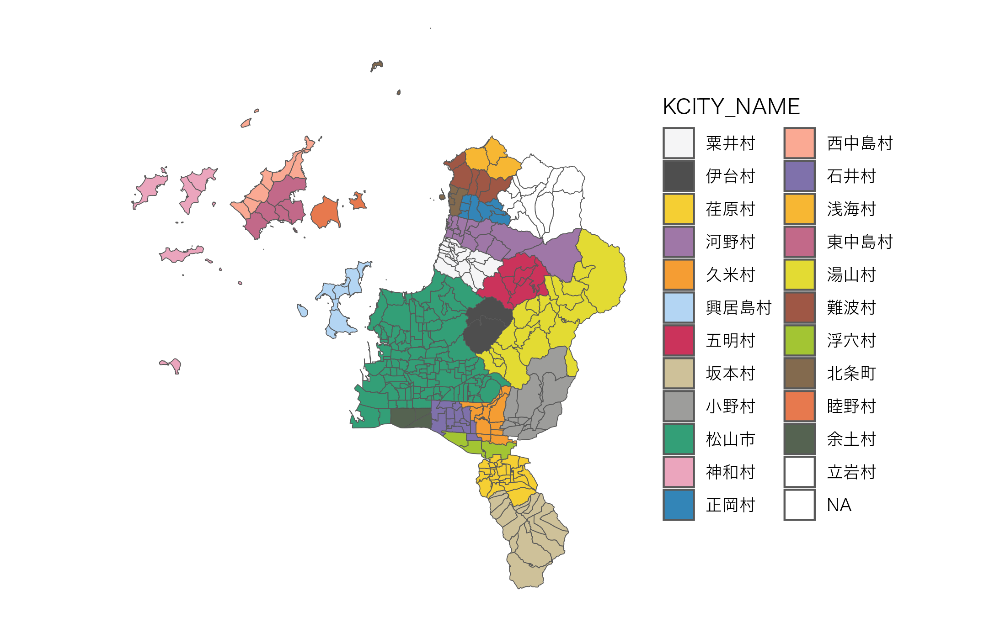

Structure of Combined Fude Polygon Data with Agricultural Community Boundary Data
Source:vignettes/articles/additional.Rmd
additional.RmdStructure of Combined Fude Polygon Data with Agricultural Community Boundary Data
There are 7 types of objects obtained by combine_fude(),
as follows:
names(db)## [1] "fude" "fude_split" "community" "community_union"
## [5] "ov" "lg" "pref"The Possible Values for community in
combine_fude() and extract_boundary()
library(dplyr)
library(data.tree)
library(ggplot2)
b[[1]] |>
filter(grepl("松山", KCITY_NAME)) |>
mutate(pathString = paste(PREF_NAME, CITY_NAME, KCITY_NAME, RCOM_NAME, sep = "/")) |>
data.tree::as.Node() |>
print(limit = 10)## levelName
## 1 愛媛県
## 2 °--松山市
## 3 °--松山市
## 4 ¦--土居田
## 5 ¦--針田
## 6 ¦--小栗第１
## 7 ¦--小栗第２
## 8 ¦--小栗第３
## 9 ¦--藤原第１
## 10 °--... 102 nodes w/ 0 sub
ggplot(data = b[[1]] |> filter(grepl("松山", KCITY_NAME))) +
geom_sf(fill = NA) +
geom_sf_text(aes(label = RCOM_NAME), size = 2, family = "Hiragino Sans") +
theme_void()出典：農林水産省「農業集落境界データ（2020年度）」を加工して作成。
The Possible Values for old_village in
combine_fude() and extract_boundary()
library(paletteer)
ggplot(b[[1]] |> filter(CITY_NAME == "松山市")) +
geom_sf(aes(fill = KCITY_NAME), alpha = .8) +
theme_void() +
theme(text = element_text(family = "Hiragino Sans")) +
paletteer::scale_fill_paletteer_d("Polychrome::kelly")
出典：農林水産省「農業集落境界データ（2020年度）」を加工して作成。